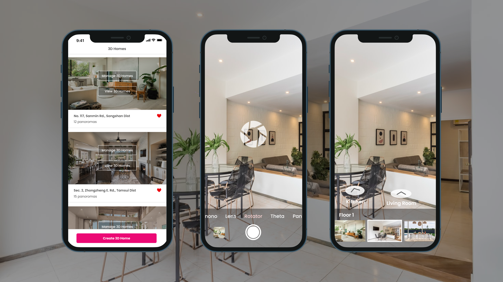

Overview
iStaging is a B2B subscription-based company. We provide accessible and intuitive immersive products for the real estate and architecture industries.
VR maker turns smartphones into a powerful VR camera, allowing users to easily create virtual tours of any space. It provides an innovative experience for real estate and architecture industries. Using a 3D camera system and motion-sensor, agents can create realistic, fully immersive virtual experiences by converting 2D panoramas into 3D spaces.
Virtual tours help real estate agents and homebuyers have an efficient house viewing experience and make it quicker to turn into actual customers buying services.
Time
2018.10-2020.6
My Role
Lead Product Designer
Team
2 Project Managers
4 iOS/Android Developers
3 Front-End Developers
3 Back-End Developers
Problem Statement
━━━━━━━━━Problems for homebuyers
The process of physical home tours is painfully time-consuming and tedious. Also, a house might look appealing from photos and descriptions, but in reality, it may not work.
Problems for real estate agents
They spend a lot of time and efforts in preparing for an open house, including home tours, staging properties and keeping them in pristine condition for homebuyers.
The Design Challenge
━━━━━━━━━Virtual home tours give potential buyers a good feel for the floor plan and flow of the home. If the properties don't appeal to a particular buyer, they’ll know it without having to waste time with a showing. Therefore, our goal is
How might we help agents create easy to use and high-quality virtual home tours?
━━━━━━━━━
The Solution
As the only product designer on the team, I designed an application that provides real estate agents to create and capture virtual home tours. They can also manage and track their properties with a smooth and efficient process. The solution includes:

Step 1. Simple and Intuitive Onboarding Flow
Features
User Interview Learnings
Impacts
Features
A/B Testing Hypothesis
Impacts


Features
Next Improvements
Features
A/B Testing Hypothesis
Impacts
But, how did I get to the solution?
━━━━━━━━━
Understanding the Context
To understand the design space, I spoke to many real estate professionals and potential homebuyers to understand the home buying process and what problems do they think exist in this process.
After getting a broad level idea of what the problems were in the home buying process, I conducted user interviews and contextual inquiries to dig deeper into the exact pain points faced by real estate agents and homebuyers. Therefore, I identified the following pain points:
Persona
To make sure that the entire team keeps the target user in mind while designing, I created user personas for both home buyers and real estate agents which we aimed to use throughout the design process.
Information Architecture
After we had an idea of the problems and what features our solution would include, I collaborated with the clients to understand the impact of every feature and the software developers and designers to understand the effort required to develop those features. The following is the information architecture for the first version of VR Maker after prioritizing all the features.
Wireframe
I sketched out some ideas to solve the identified problems and brainstorm some of the features for our solution and map out the users' journey. I also use wireframes to communicate with stakeholders and make sure that everyone is on the same page.


Design Guideline

High-fidelity Idealization
After I had the information architecture, wireframes and design guideline in my hand, I create high-fidelity version of our designs to hand them over to the developers.

Usability Test
We conducted a task-based usability test with 15 participants and gathered feedback. This was followed by a quantitative survey that asked participants to describe their thought processes while performing the tasks.
Our general plan consisted of the following steps:
1. Give a description of the app concept to the users.
2. Walkthrough users along with benchmark tasks one by one.
3. Prompt users for feedback after each task about what was smooth or not about the task.
Conducted usability tests with my colleagues

Analyzed user data by questionnaires ━ QUIS and SUS

Reflection and Takeaways
━━━━━━━━━How We Learn and Build Empathy
Innovation begins and ends with people. The disciplined practice of human-centered design involves careful investigation. It requires curiosity, objectivity, and empathy. Understanding user needs is the first step in building a product that will work for others. We conducted several rounds of deep-dive research that combined different research methodologies, including diary studies, face-to-face interviews, and contextual inquiry, in several proxy markets, including Taiwan, the United States, Australia, and France.
Immerse Ourselves in Their Lives and Culture
The research itself is no longer sufficient to get the full stories about a country, the people, and how their life is by just interviewing them. Experiencing and seeing them in our eyes, sensing it, and “living in it” is the way to go.
Thanks to all my teammates for making this happen and being so supportive — (Zoi, Kendra, Felix, Ray, Shawn, Vanessa...etc)